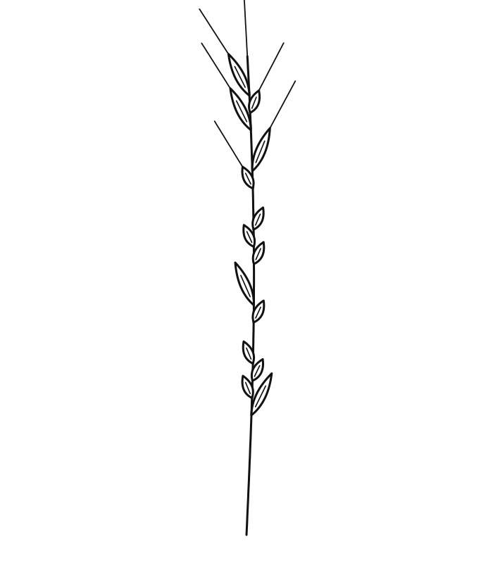
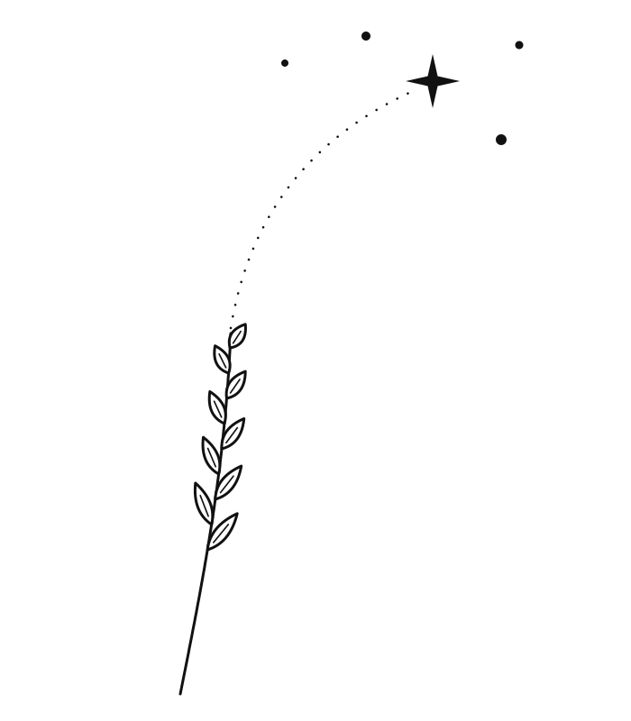
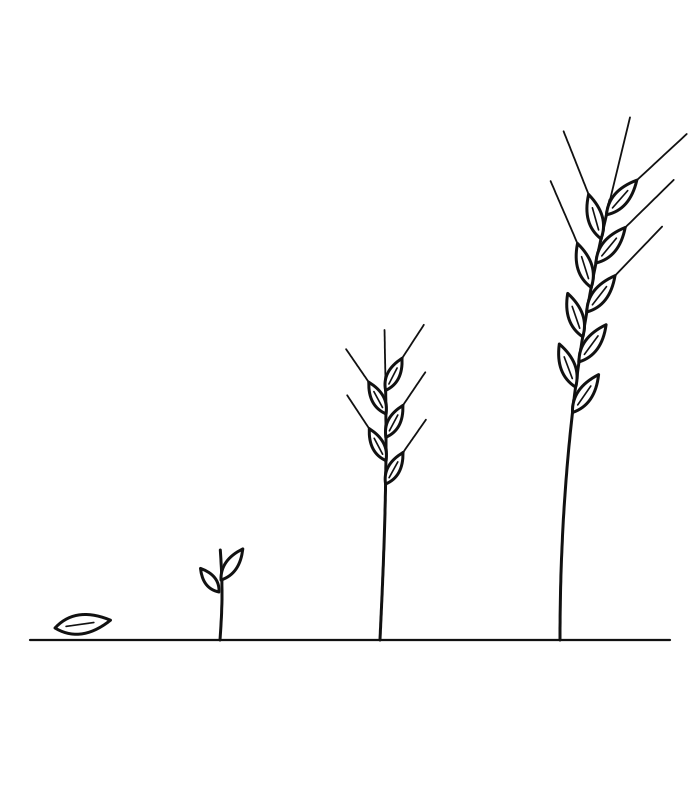

Başağın taneleri rastgele değil: kısa ve uzun taneler Mors alfabesiyle onun adını yazıyor. Dışarıdan sıradan bir başak, aslında “BAŞAK”.
Sırrını sadece ikiniz bilirsiniz.

Gökyüzünde Başak takımyıldızının en parlak yıldızının adı Spika; Latincede “buğday başağı” demek. Topraktaki başak, kendi adını taşıyan yıldıza uzanıyor.
Adı hem toprakta hem gökyüzünde.

Tek bir tohum, filiz, genç başak ve olgun başak. Olgun başak başını eğer; bereketin ve olgunluğun işareti. Yatay, bilek ya da kol içi için.
Birlikte büyüyen bir sevgi.